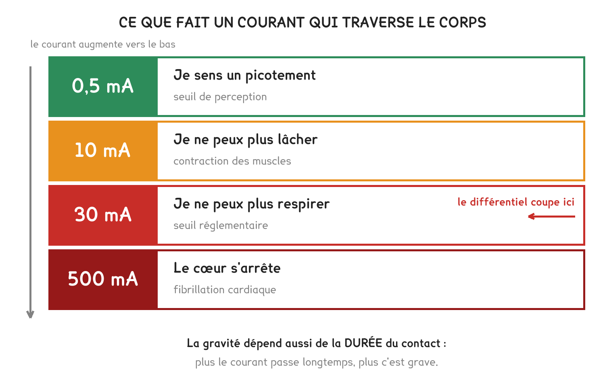

CAP Électricien · 1re année
C'est le courant qui traverse, pas la tension. Trente milliampères suffisent, et c'est la valeur inscrite sur le différentiel.
3 exercices · 6 items d'entraînement · 1 figure
Savoirs travaillés
Un apprenti touche la phase, le différentiel déclenche, il s’en sort. Ce qui traverse le corps est le courant, pas la tension.
La gravité se lit sur une courbe : elle dépend de l’intensité et du temps.
30 mA, c’est le seuil du différentiel. Au-delà, le courant ne lâche plus la main et le cœur s’affole. C’est la valeur inscrite sur l’appareil du tableau.

Le multimètre affiche un nombre, pas une unité. Sur le calibre 200 mA, 30 veut dire 30 milliampères ; sur le calibre 10 A, 30 voudrait dire 30 ampères, soit mille fois plus. On lit le calibre avant de noter la valeur.
Série · AU
Exercice · CN
Le différentiel porte l’indication 30 mA. Combien cela fait-il en ampères ?
Exercice · CN
Des trois grandeurs vues en classe — la tension, le courant, la puissance —, laquelle traverse le corps et décide de la gravité ?
Exercice · CN
En deux phrases : que fait le différentiel, et pourquoi le disjoncteur, lui, n’aurait pas suffi ?
Avant d’intervenir : consigner, vérifier l’absence de tension, et travailler hors tension. Le différentiel est un filet, pas une méthode de travail.
Ce site rappelle la méthode. Aucun corrigé, rien n'est noté.